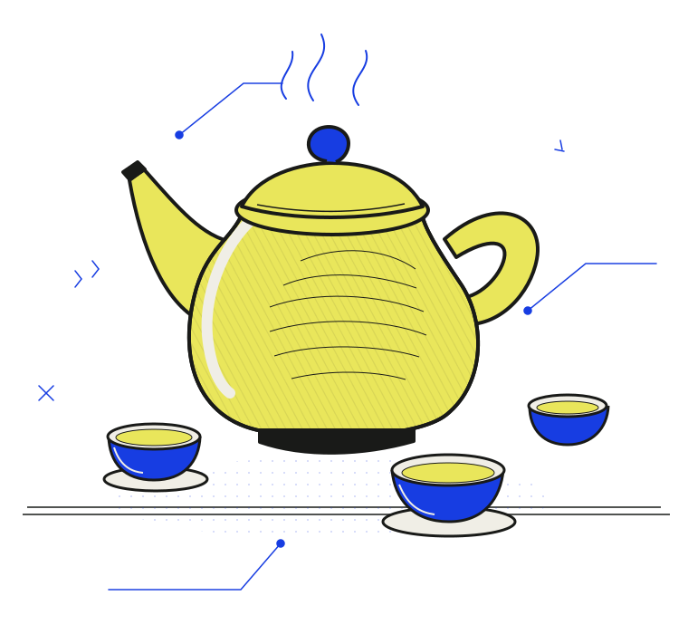

Андрей ↘
Заваривает чай. Рассказывает, откуда лист и что происходит с ним от пролива к проливу.
Чайные встречи в Москве
Китайский чай / живая компанияАндрей заваривает чай.
Вы приходите — и вечер складывается.
С разговорами, вопросами или без слов.
Первый раз? Отлично. Мы всё покажем.

Никакой сложнойЧайник один.
Тем для разговора — сколько угодно.
Мы собираемся небольшой компанией и пьём китайский чай.
Пробуем несколько сортов, завариваем один лист снова и снова, замечаем, как меняется вкус. Говорим о чае и обо всём остальном.
Можно прийти одному. Можно с другом. Необязательно знать, чем улун отличается от пуэра — разберёмся за столом.
У чайника
и вокруг него
Заваривает чай. Рассказывает, откуда лист и что происходит с ним от пролива к проливу.
Создаёт атмосферу. Ведёт авторские встречи с практиками внимания и телесного присутствия.
Несколько китайских чаёв. Разные проливы. Разговор без обязательной темы. Подойдёт для первого визита.
02Обсуждаем идеи Дао Дэ Цзина через обычные ситуации и собственный опыт. С чаем, разумеется.
03Дыхание, звук или работа с вниманием. Что именно будет на встрече, всегда пишем в анонсе.
Программа, время и стоимость каждой встречи — в актуальном анонсе.
Андрей подскажет дату, стоимость и наличие мест. Договоритесь о встрече — и приходите.
Андрей / @midkam ↗Москва. Красные Ворота.
Точный адрес — после записи.
Это нормально. Расскажем простым языком, покажем, как завариваем, и ответим на вопросы. Можно просто пробовать.
Приходите. За небольшим столом легко познакомиться. При этом постоянно поддерживать разговор необязательно.
Обычно несколько часов. Точное время начала и окончания — в анонсе конкретной встречи.
Выбирайте чайную церемонию. Дополнительные практики бывают на авторских встречах и всегда указаны в программе.